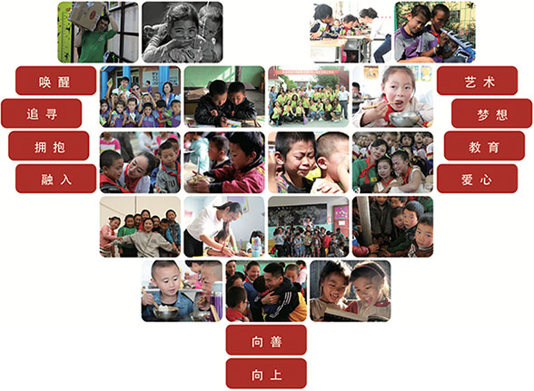
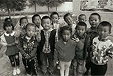

华星介绍
企业历程
荣誉奖项
华星公益
管理团队
创始人
分公司负责人
商学合伙人
分支机构
您的位置：
首页
>
关于华星
>
华星公益
公益大事记
公益不只是捐赠，更不是同情，也不是精英和少数人的专属，公益不是看你花了多少钱。公益和教育的本质一样是唤醒，唤醒更多向上和向善的力量，唤醒更多人的爱心，唤醒更多人去关注艺术教育贫瘠地图，唤醒更多艺术培训行业同仁，用实际行动践行公益。
真正参与公益是你自己发生变化，因为你发生变化，世界才会发生变化，世界的改变不是一个人做了很多，而是我们每个人做了一点点
——“爱要爱来” “公益心 · 教育魂” 中国艺术教育公益行发起人邢成

您的浏览器不支持canvas
五届公益的路线图
第一届：触碰
2014年10月 四川·甘孜
第二届：拥抱
2015年9月 贵州·遵义
第三届：西行
2016年9月 新疆·乌苏
第四届：融入
2017年9月 内蒙古·太仆寺旗
第五届：追寻
2018年9月 甘肃·张掖
支教、捐赠、艺术交流
“公益心·教育魂”中国艺术教育公益行是以艺术支教、捐赠、交流为主要内容开展的爱心公益活动，为贫瘠的地区带去了先进的艺术教育理念和教学方法，华星公益自启动以来，先后前往四川甘孜藏族自治州、贵州遵义、新疆乌苏、内蒙古太仆寺旗进行捐赠、支教活动，华星公益号召并影响着越来越多的艺术工作者关注中国贫困地区的艺术教育事业，与广大艺术工作者一起探索生命的真谛，一起践行公益。
查看更多内容
